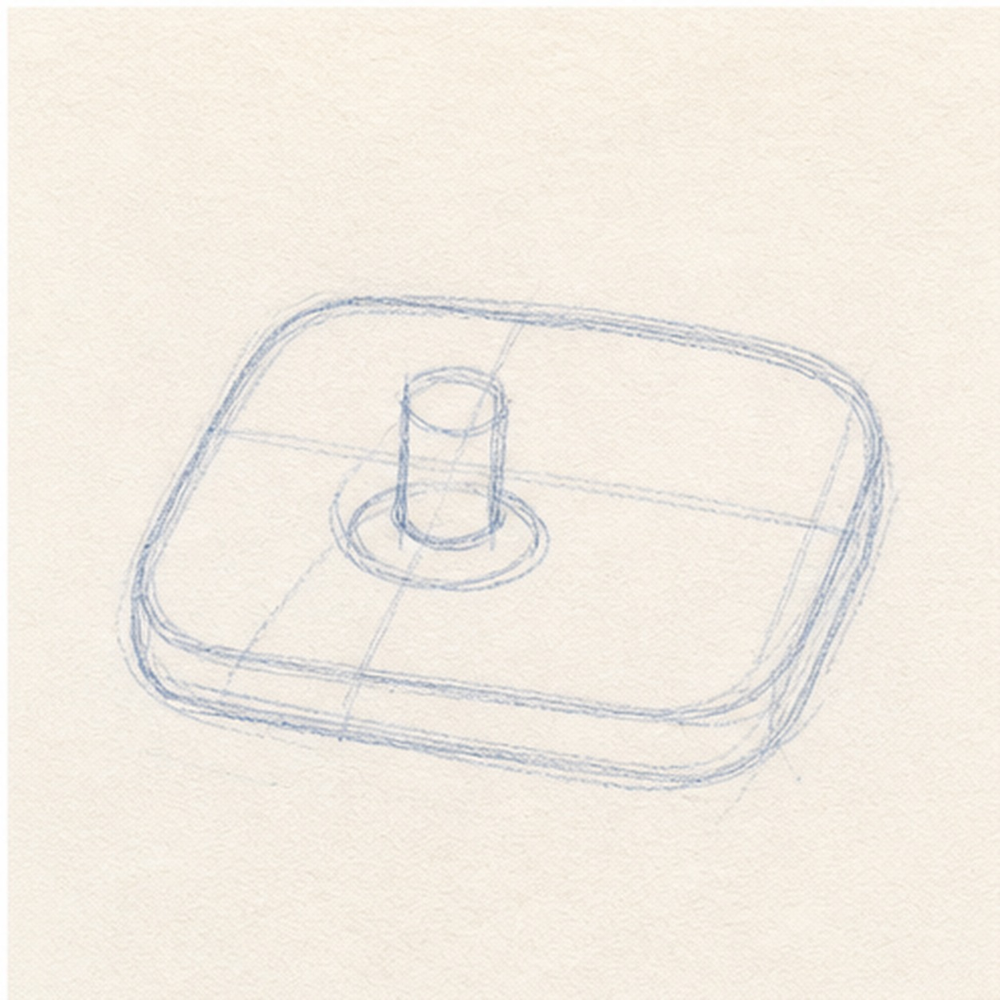
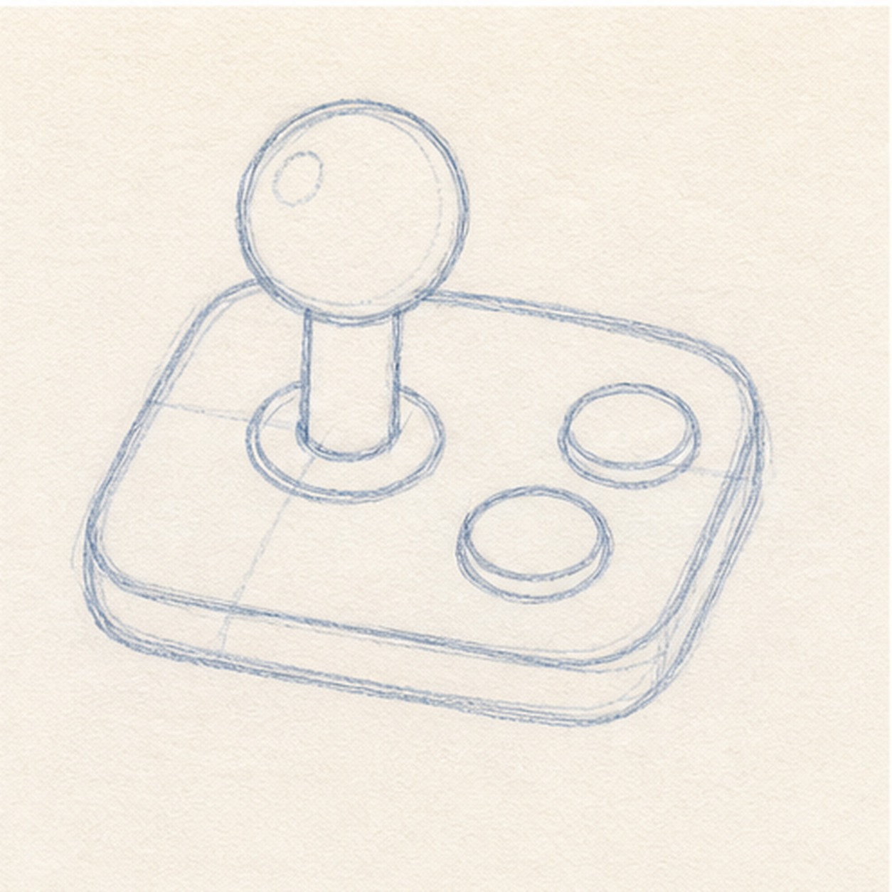
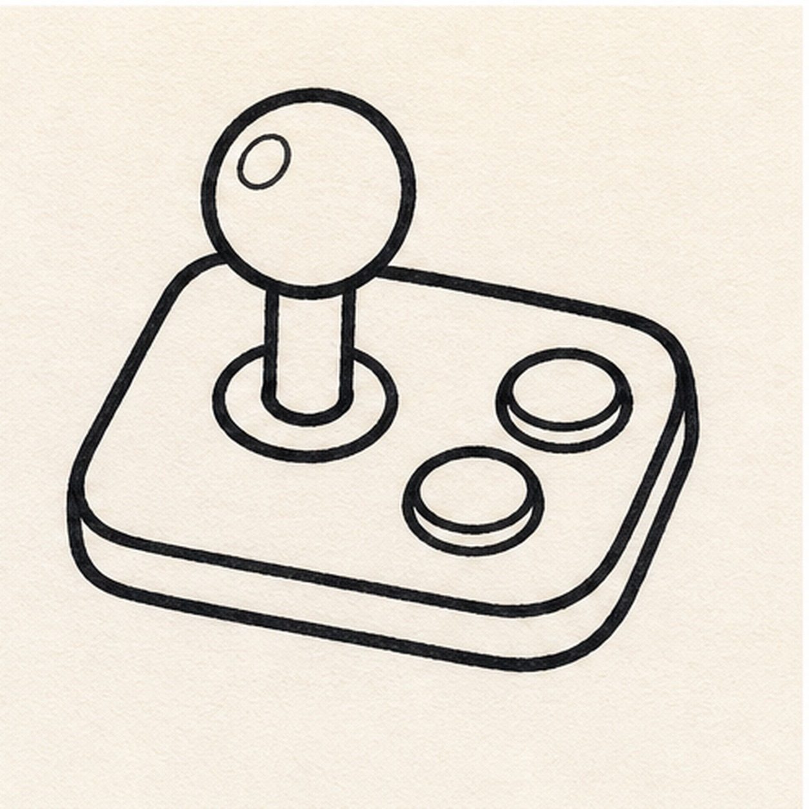
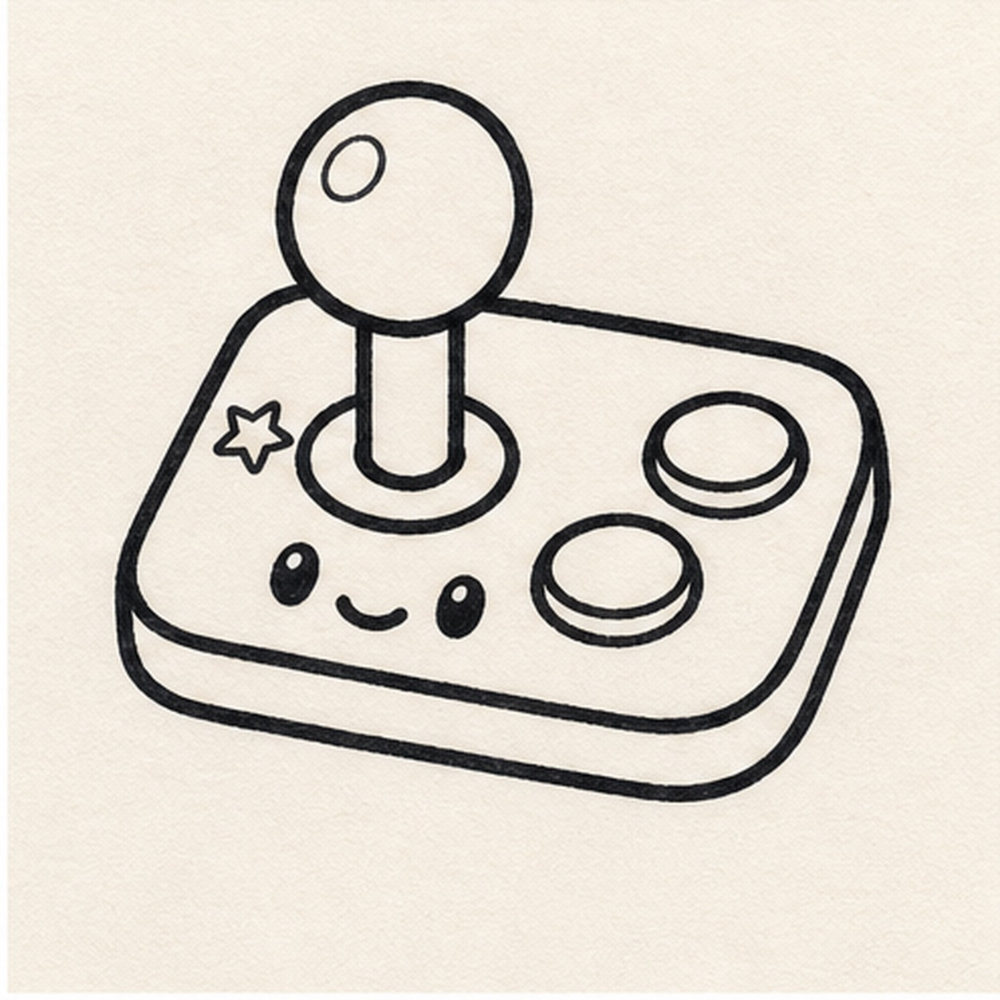
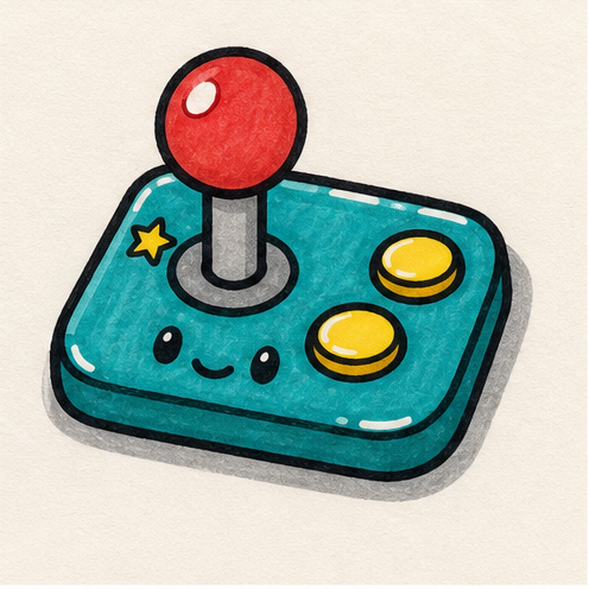

Felt-tip marker mode
Let's doodle a retro arcade joystick sticker
Treat this as one playful practice round: sketch the idea loosely, simplify the shapes, then commit with confident marker outlines and bright fills.
-
01

Set the arcade base
Draw a rounded rectangle base, then place a short joystick stem near one side.
Doodle tip: Tilt the base just a little. That makes the sticker feel more playful than a flat diagram.
-
02

Add ball and buttons
Add a round ball on top of the stem, then draw two button circles on the open side of the base.
Doodle tip: Leave space between the buttons. Clear gaps make the controller readable after the thick outline goes on.
-
03

Ink the controls
Trace the base, joystick, ball, and buttons with a thick black marker outline.
Doodle tip: Follow the shapes you already placed. This pass should make the controller bolder, not rearrange it.
-
04

Give it a face
Add two little eyes, a small smile, and one star accent on the base.
Doodle tip: Keep the face low on the base so it does not compete with the joystick ball.
-
05

Fill the arcade colors
Fill the base teal, the joystick ball red, and the buttons yellow, then add a gray sticker shadow and small highlight gaps.
Doodle tip: Marker streaks are fine here. They make the controller feel hand-doodled instead of printed.
-
06
Power up the sticker
Retrace the existing outlines, deepen the marker fills, and sharpen the face, star, shadow, and highlights already on the page.
Doodle tip: Do not add a screen or logo at the end. The base, stick, buttons, and face are enough to sell the arcade idea.